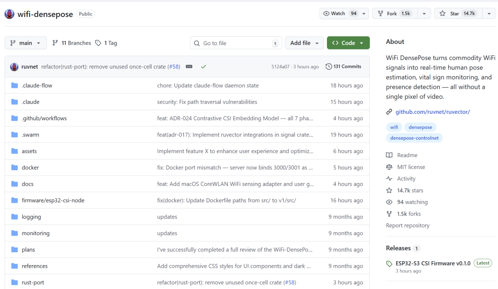
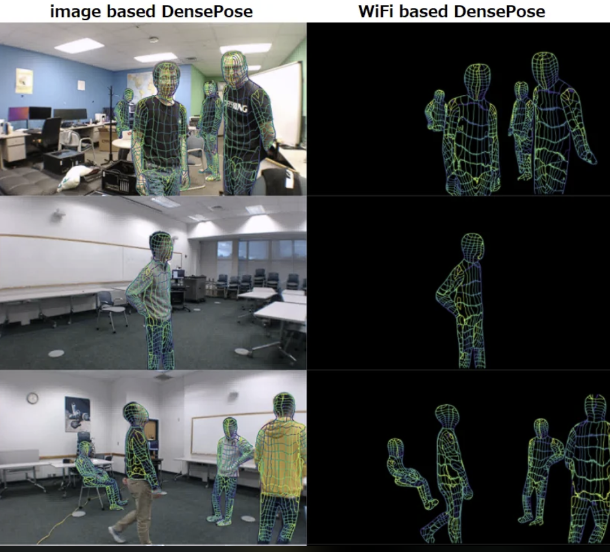
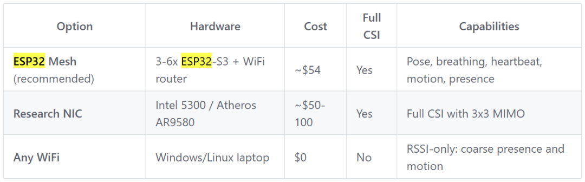
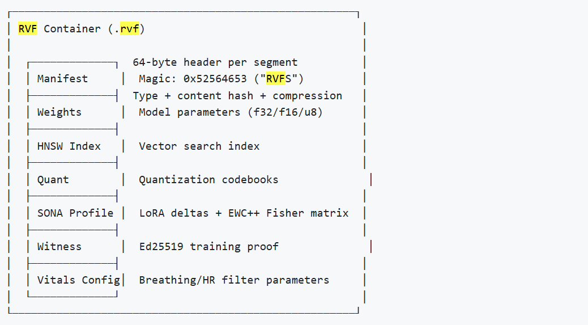
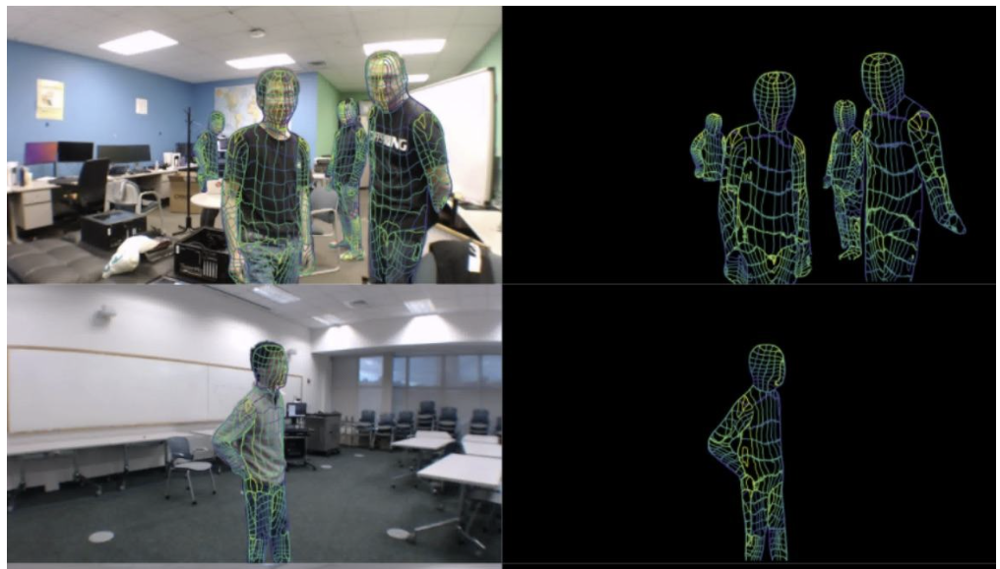

去年 CMU 发了篇论文，用 WiFi 信号做人体姿态估计，当时看着挺玩的。
学术验证嘛，大家也没太当回事。
结果现在 ruvnet 把这玩意真做出来了，开源项目 WiFi DensePose，几个月 14800+ Star。

不装摄像头，不戴设备，WiFi 信号就能看出人在哪、在干嘛，连呼吸心跳都测得出来。

WiFi 信号穿过空间，人体会干扰电波路径，抓住这些变化就能反推位置和动作。学术界管这叫 CSI 分析。
作者用 Rust 重写了信号处理，比 Python 快 810 倍。
单帧 18.47 微秒，每秒 54000 帧。呼吸 6-30 次/分钟，心率 40-120 次/分钟，处理速度 11665 帧/秒。
Docker 镜像 132MB，内存 100MB，树莓派能跑。
硬件这块，最便宜的方案是 ESP32-S3，单片 8 美元，搞 3-6 个组网格，54 美元搞定。
要是只做存在检测和粗略的动作识别，笔记本自带的 WiFi 网卡就够了，零成本。
完整的姿态估计和生命体征监测，得用支持 CSI 的硬件，Intel 5300 网卡 15 美元，Atheros AR9580 大概 20 美元。
ESP32 固件是预编译好的，不用折腾工具链，烧进去就能跑。

信号处理这块，集成了 6 种学术界验证过的算法。
SpotFi 的共轭相乘用来消除载波频偏，Hampel 滤波器去除脉冲噪声，Fresnel 区域模型预测呼吸信号的位置，CSI 频谱图做时频分解，子载波选择提取最敏感的信道，身体速度剖面用于跨环境识别。
这些算法都在 wifi-densepose-signal 模块里实现了，有 83 个测试用例覆盖。
模型训练用的是图变换器架构，输入是 CSI 特征矩阵，输出是 17 个 COCO 关键点和 DensePose UV 坐标。
训练管道分 8 个阶段：数据集加载、图变换器构建、6 项复合损失训练、SONA 自适应、稀疏推理优化、RVF 容器打包。
支持 MM-Fi 和 Wi-Pose 两个公开数据集的预训练，也可以用 ESP32 采集的 CSI 数据配合摄像头伪标签做微调。
训练好的模型打包成单个 .rvf 文件，包含权重、索引、量化码本、自适应参数，部署时不需要任何外部依赖。

应用场景覆盖得很广。
医疗场景，老人跌倒检测、夜间活动监控、非接触式呼吸心率监测，不需要老人配合佩戴设备。
零售场景，客流统计、停留时间分析、排队长度估算，不用装摄像头，符合 GDPR 隐私规定。
办公场景，工位占用检测、会议室空置提醒、基于真实在场情况的 HVAC 优化。
灾难救援场景，通过瓦砾探测被困人员的呼吸信号，进行 START 分级，估算 3D 位置，给救援队提供可操作的情报。

部署方式很灵活。
Docker 一行命令就能跑起来，docker pull ruvnet/wifi-densepose:latest，然后 docker run 映射端口就行。
提供 REST API 和 WebSocket 两种接口，REST 用于按需查询，WebSocket 用于实时流式推送。
支持渐进式加载，模型分三层：Layer A 瞬间启动（5 毫秒以内），Layer B 热加载（100 毫秒到 1 秒），Layer C 完整加载（几秒）。
可以根据设备性能选择量化方案，ESP32 用 int4（0.7MB），手机用 int8（6MB），服务器用 f32（50MB）。
项目有 542 个测试用例，全部用真实算法实现，没有 mock。
提供了硬件无关的仿真模式，--source simulate 参数可以在没有物理设备的情况下跑通整个流程。
CI 流水线会跑确定性检查和随机扫描，确保信号处理的每个操作都是可复现的。
写在最后
WiFi 感知技术的商业化落地，关键在于把学术论文里的概念，变成能在 8 美元芯片上跑的工程实现。
这个项目做到了三件事：用 Rust 重写把性能拉到实用级别，用 RVF 容器把部署简化到单文件，用 ESP32 把硬件成本压到消费级。
当 WiFi 感知的成本降到这个量级，它就不再是实验室玩具，而是可以大规模部署的基础设施。
一个 WiFi 路由器覆盖的区域，就是一个感知单元，不需要额外布线，不需要摄像头，不需要用户配合。
这种无感的、低成本的、隐私友好的感知方式，可能会成为下一代智能空间的标配。
GitHub 项目地址：https://github.com/ruvnet/wifi-densepose